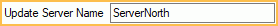
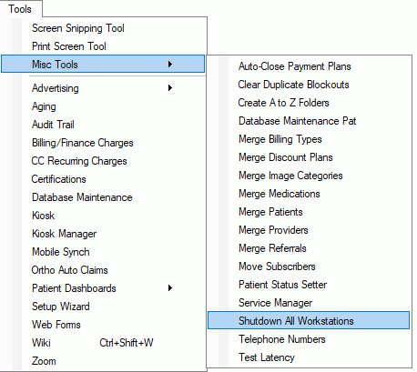

Replication: Update Open Dental Version
To update Open Dental when using Replication, refer to the steps below.
Before updating, make sure required setup is complete.
- All workstations need shared access to an A to Z Folder with the updated contents of the Update Files folder (e.g., use file replication for shared network folders). See Paths.
- Disable third-party programs that may try to query the Open Dental database.
- Pick one replication server that will always perform updates. This is typically the first server in your replication chain. Set this server as your Update Server Name in Miscellaneous Setup to ensure updates are not initiated by any other workstation.
 - Coordinate a specific time to perform the update with all locations. Users should stay out of Open Dental for up to 60 minutes.
When ready to update Open Dental for all locations, follow the steps below:
- From your Update Server, kick all users out of Open Dental. Go to Tools, Misc Tools, Shutdown All Workstations. This tool reminds users about the update and closes Open Dental on all workstations.
 - Ensure all MySQL replication servers are running smoothly.
- From the File Explorer, navigate to the MySQL folder. The default location is C:\Program Files (x86)\MySQL\MySQL Server 5.5 or C:\Program Files\MariaDB 10.5
- Locate the MySQL bin folder. (Typically C:\Program Files (x86)\MySQL\MySQL Server 5.5\bin or C:\Program Files\MariaDB 10.5\bin) Double-click into it.
- In the address bar, type CMD and hit enter to open CMD.

- Run the following command. Replace opendental with the name of the database if different.
mysql -u root -c opendental
Note: If the MySQL service has a password add -p to the command. - Run the next command.
show slave status \G
- Repeat step two for each server. Note:
- An Empty set is expected on the primary server in a two server one-way setup as only the reporting server will have a replica (slave) running
- By running the show slave status command on each server it will determine if replication is up and running. Do not continue if any slave status says that the Slave IO or Slave SQL is not running.
- In cases where replication is not running: In Open Dental go to Setup, Advanced Setup, Replication.
- For Daisy Chain configurations, click Synch in the lower left. This stops and starts the Replicas and will ensure all replication servers receive the database update queries.
- For One Way configurations, this is generally not necessary, though you could run the stop slave; and start slave; commands to be certain.
- From the Update Server, open Open Dental and go to Help, Update. Install the updated version.
- Launch Open Dental to upgrade the database.
- Launch Open Dental on all servers in the replication chain and log into a user at least once, to ensure the Replication Service Monitor can monitor the health of the replication chain.
- Once complete, users can log back into Open Dental. They will be prompted to update to the new version. Select OK, then log in as normal.
You will get the following information: